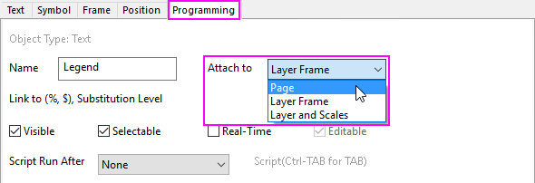
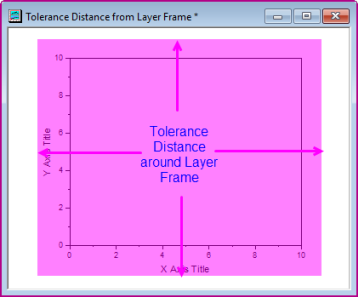

Objektverbindung und Skalierung
Attachment-Scaling-Object
Wenn Sie ein Text- oder Zeichenobjekt zu einem Origin-Fenster hinzufügen, wird das Objekt mit dem Diagramm durch eine von drei Methoden verbunden:
- 
- Seite Seitenobjekte werden nicht weder vom Verschieben oder Verändern der Größe des zugehörigen Diagrammlayers beeinflusst, noch verschieben Sie sich oder ändern die Größe beim Ändern der Achsenskalierung. Das Objekt ist trotzdem ein Teil des Layers, der aktiv war, als das Objekt erstellt wurde, und wenn der Layer gelöscht oder verborgen wird, wird auch das Objekt gelöscht oder verborgen.
- Layerrahmen Die Größe und Position der Objekte des Layerrahmens sind eine Funktion der Größe und Position des Layerrahmens (Ansicht: Zeige: Rahmen). Wenn Sie den Layer verändern, verschiebt sich das Objekt und passt die Größe entsprechend der Größe und Position des neuen Layerrahmens an. Wenn Sie die Achsen neu skalieren (die Achsenwerte Von und Bis verändern), bleiben Größe und Position des Objektes unverändert.
- Layer und Skalierungen Das Objekt ist an einen bestimmten Bereich der Achsenskalierungswerte des Layers gebunden. Wenn Sie den Layer bewegen, verschiebt sich das Objekt mit dem Layer. Wenn Sie den Layer verändern, verschiebt sich das Objekt und passt die Größe entsprechend der Größe und Position des neuen Layerrahmens an. Wenn Sie die Achsen neu skalieren (die Achsenwerte Von und Bis verändern), wird das Objekt nicht in seiner Größe angepasst, sondern bewegt sich in Relation zum angezeigten Bereich der XY-Koordinatenwerte.
Die Objektverbindungsmethode hat Auswirkungen auf einige Zeichenoperationen -- insbesondere jene Operationen, die die Größe eines Layers verändern oder den Achsenskalierungsbereich ändern. Das folgende Material kann auf Text- oder Zeichenobjekte angewendet werden, die jedem beliebigen Origin-Fenster hinzugefügt werden können, ist aber hauptsächlich für Diagrammfenster relevant.
Standardmethode der Objektverbindung
Wenn das Objekt erstellt wird, wird die standardmäßige Objektverbindungsmethode (Seite, Layerrahmen oder Layer und Skalierungen) bestimmt durch:
- Den erstellten Objekttyp (Text, Polygon, Pfeil).
- Die Position des Objekts zur Zeit der Erstellung, relativ zum Layerrahmen. Zum Beispiel wird ein Textobjekt, das innerhalb des Layerrahmens des Diagramms erstellt wurde, per Standard am Layerrahmen angehängt. Das gleiche Objekt wird aber, wenn es außerhalb des Layerrahmens erstellt wurde, standardmäßig an die Seite angehängt (einschließlich eines "Toleranz"abstands vom Rand des Layerrahmens).
-
- 
Im Allgemeinen ...
| Objekttyp |
Bei Erstellung
innerhalb oder leicht außerhalb des Layerrahmens,
Angehängt an... |
Bei Erstellung
außerhalb des Layerrahmens,
Angehängt an... |
| Text |
Layerrahmen |
Seite |
| Rechteck, Kreis, Polygon, Region, Polylinie, Freihand |
Layerrahmen |
Seite |
| Pfeil, Linie, gekrümmter Pfeil |
Layer und Skalierungen |
Seite |
Wenn ein Objekt erstellt wurde, können Sie die Methode zum Anhängen durch Bearbeiten der Gruppe Anhängen an im Dialog Objekteigenschaften verändern (siehe nächsten Abschnitt).
Standardmethode zum Anhängen von Objekten ändern, wenn ein Objekt INNERHALB oder ETWAS AUSSERHALB des Layersrahmens erstellt wird
Wählen und setzen Sie die folgenden Systemvariablen entsprechend dem Objekttyp:
| Systemvariablen |
Objekttyp |
Werte |
| @AR |
Pfeil, Linie, gekrümmter Pfeil |
0 = An Layerrahmen anhängen
1 = An anhängenLayer und Skalen anhängen
|
| @ARX |
Text |
0 = An Layerrahmen anhängen
1 = An anhängenLayer und Skalen anhängen
|
| @ARR |
Rechteck, Kreis, Polygon, Region, Polylinie, Freihand |
0 = An Layerrahmen anhängen
1 = An anhängenLayer und Skalen anhängen
|
Methode zum Anhängen eines Beschriftungsobjekts ändern
Um die Anhängmethode eines Objekts zu bearbeiten, öffnen Sie den Dialog Objekteigenschaften:
- Klicken Sie mit der rechten Maustaste auf das Objekt und wählen Sie Eigenschaften im Kontextmenü; oder markieren Sie das Objekt und wählen Sie Format: Objekteigenschaften im Hauptmenü.
- Klicken Sie auf die Registerkarte Programmierung und wählen Sie eine Option in der Anhängen an.
Methode zum Anhängen und Skalierung der Objekte
Alle Objekte, unabhängig von der Anhängmethode sind mit einem Diagrammlayer verbunden (im Allgemeinen der Layer, der zum Zeitpunkt des Anhängens aktiv war). Löschen oder verbergen Sie den Layer, und alle verbundenen Objekte werden ebenfalls gelöscht oder verborgen.
Details Zeichnung und die Gruppe der Skalierungselemente
Die Registerkarte Anzeige im Dialog Details Zeichnung verfügt über Bedienelemente zum Skalieren der Elemente:
- Klicken Sie bei aktiver Grafik im Menü auf Format: Layer und dann auf die Registerkarte Größe.
-
- Layer mit Rahmen skalieren: Elemente, die an den Layerrahmen oder Layer und Skalierungen angehängt sind, werden proportional skaliert, wenn sich die Größe des Layerrahmens verändert.
- Fester Faktor: Unabhängig von der Anhängmethode werden Textobjekte nicht in der Größe verändert, wenn sich die Größe des Layerrahmens ändert (sie verschieben sich aber mit dem Layerrahmen). Gezeichnete Objekte (Polygone, Pfeile), die an den Layerrahmen oder Layer und Skalierungen angehängt sind, werden jedoch in der Größe verändert und verschoben. Wenn Sie nicht möchten, dass sich die Größe von gezeichneten Objekten verändert, müssen Sie ihre Anhängmethode in Seite ändern. Gezeichnete Objekte, die an die Seite angehängt sind, verschieben sich nicht relativ zu den Änderungen von Größe und Position des Layerrahmens.
Wenn die Skalierung wichtig ist
Die Skalierung kann jedes Mal zu einem Problem werden, wenn Sie die Größe des Layerrahmens verändern. Dies kann eine Änderung an einem einzelnen Layer durch manuelles Ziehen mit der Maus sein; oder es kann verursacht werden, wenn Sie separate Diagramme zu einer Grafik mit mehreren Feldern zusammenfügen, oder Sie verwenden die Funktion In Diagramme extrahieren, um Diagrammlayer in separate Felder zu extrahieren.
In den meisten Fällen bieten Origin-Hilfsmittel wie der Dialog Grafikfenster zusammenfügen (Grafik: Grafikfenster zusammenfügen) ausreichend Kontrolle, um zufriedenstellende Abstände der Layer und Skalierung der Diagrammelemente zu erhalten. (Beachten Sie, dass es eine Gruppe Elemente skalieren in diesem Dialog gibt).
- Gruppe Elemente skalieren im Dialog Details Zeichnung.
- Anhängmethode für Objekte ändern.
- Skalierungsfaktoren festlegen.
Um Objekte nicht mit dem Layer zu verschieben oder in der Größe zu verändern, wählen Sie die Anhängmethode Seite. Das Objekt ist immer noch im Layer, der aktiv war, als das Objekt erstellt wurde, enthalten -- wenn Sie den Layer löschen, wird das Objekt daher ebenfalls gelöscht -- die Größe und Position des Objekts bleiben aber von Veränderungen am Layer unberührt.